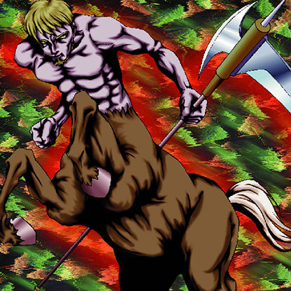

Mystic Horseman

STATS
ATK: 1300
DEF: 1550DECK COST
Deck Cost per Card: 29Fusion List (8 Possible Fusions)
- Mystic Horseman + Battle Ox = Rabid Horseman
- Mystic Horseman + Candle of Fate = Flame Cerebrus
- Mystic Horseman + Darkfire Dragon = Flame Cerebrus
- Mystic Horseman + Fire Eye = Flame Cerebrus
- Mystic Horseman + Firegrass = Flame Cerebrus
- Mystic Horseman + Metal Dragon = Flame Cerebrus
- Mystic Horseman + Rare Fish = Marine Beast
- Mystic Horseman + Wings of Wicked Flame = Flame Cerebrus